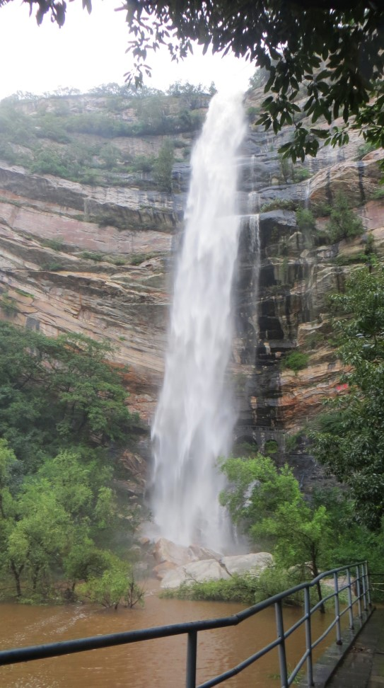

.jpg)
关于嵩山
嵩山位于河南省登封市，是五岳之中的中岳。它拥有极其深厚的历史文化底蕴，是华夏文明的重要发祥地之一。这里曾是古代帝王将相祭祀封禅、文人墨客吟诗作画、高僧名道讲经论道的圣地，无数的历史故事和文化遗迹在这里沉淀。
嵩山的自然风光独特而迷人。其山势峻峭，峰峦叠嶂，有的山峰如利剑直插云霄，有的则似巨兽盘踞大地。山上的岩石纹理奇特，经过岁月的雕琢，形成了各种各样令人惊叹的形状。同时，嵩山的植被丰富多样，从山脚到山顶，依次分布着阔叶林、针叶林等不同的植被带，四季景色各异。
嵩山的名胜古迹星罗棋布。少林寺无疑是其中最耀眼的明珠，这座闻名遐迩的佛教寺院，不仅有着宏伟壮观的建筑，如庄严的大雄宝殿、古朴的藏经阁等，更以其精湛的少林武术而享誉全球。寺内的碑刻、壁画等艺术珍品也承载着丰富的历史文化信息，每年吸引着大量国内外游客前来朝拜、参观和学习武术。
中岳庙也是嵩山的重要古迹之一，它规模宏大，建筑规制严谨，红墙黄瓦，金碧辉煌。庙内保存着大量的古建筑、碑刻和古树名木，这些文物见证了嵩山地区悠久的历史变迁和宗教文化发展，是研究中国古代建筑和宗教文化的重要实物资料。
嵩山的地质景观堪称一绝。这里是世界地质公园，拥有典型的“五代同堂”地质现象，即太古宙、元古宙、古生代、中生代、新生代的地层和岩石在这里都有出露，仿佛是一部地球演变的史书，向人们展示着数十亿年来地球的沧桑巨变。其中，峻极峰的地质构造尤为壮观，岩层褶皱、断层等地质遗迹清晰可见，吸引着众多地质爱好者和科研人员前来考察研究。
嵩山的登山线路充满挑战与乐趣。无论是沿着古老的石阶路攀登，感受历史的厚重与自然的宁静，还是选择更为险峻的野线挑战自我，都能让登山者领略到嵩山不同寻常的魅力。在登山途中，还可以欣赏到各种奇特的自然景观，如形态各异的石头、清澈见底的山泉等。
嵩山的四季景色如画。春天，山花烂漫，漫山遍野的花朵与翠绿的山林相互映衬，构成了一幅绚丽多彩的画卷；夏天，山林郁郁葱葱，是避暑纳凉的好去处，山间的清风和凉爽的气温能让人忘却夏日的炎热；秋天，枫叶如火，银杏金黄，整个嵩山仿佛被大自然打翻了调色盘，色彩斑斓；冬天，嵩山银装素裹，白雪皑皑的山峰在阳光的照耀下闪耀着圣洁的光芒，宛如仙境一般。
嵩山周边的美食文化也别具一格。登封烧饼是当地的特色美食之一，它外皮酥脆，内瓤松软，香气扑鼻，无论是搭配羊肉汤还是单独食用，都别有一番风味。还有嵩山野菜，如蒲公英、荠荠菜等，经过简单的烹饪，保留了野菜的清香与营养，让人品尝到大自然的原汁原味。
嵩山风景
-
峻极峰壮丽
-
少林寺神韵

-
三皇寨奇景
-
卢崖瀑布灵动
